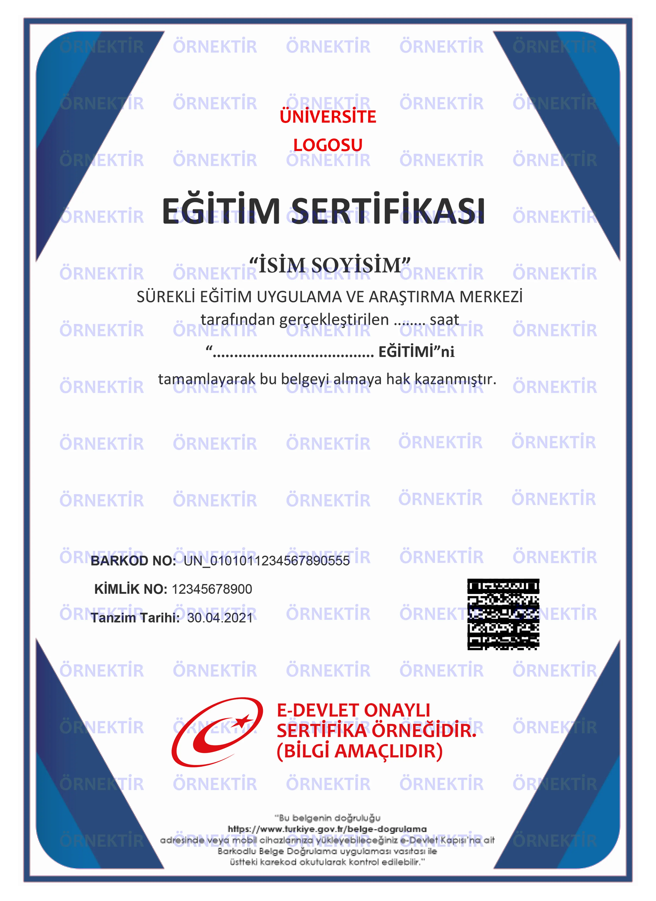

6331 Sayılı İSG Kanunu Uyumlu
e-Devlet Onaylı Karekodlu Belge
İlk Yayın: 2012 • Güncelleme: 10 Eylül 2026
Asfalt ve Silindir İş Makinesi Operatörlüğü Eğitimi
2.500 TLKDV Dahil & Sınav Dahil
🎁 4 Arkadaşını Getirene Kendi Kursu ÜCRETSİZ!
👥 (5 kişi ve üzeri ekip kayıtlarında özel avantajlar)
⚖️
Yasal Risk ve Ceza Kıyaslaması:6331 sayılı İSG Kanunu (Madde 17) uyarınca belgesiz eleman çalıştırmanın cezası kişi başı 24.680 TL'dir. MEB onaylı, e-Devlet kayıtlı ömür boyu geçerli sertifika bedeli ise sadece 2.500 TL (KDV Dahil)'dir.
Yol & Asfalt SıkıştırmaToprak ve Asfalt Silindiri ile Kompaksiyon Emniyeti
Otoyol, baraj, demiryolu ve altyapı şantiyelerinde toprak, ariyet ve sıcak asfalt tabakalarının vibrasyonlu çelik ve lastik tekerlekli silindirlerle standartlara uygun sıkıştırılması operatörlük eğitimidir.
Silindir operatörü; yol inşaatı ve altyapı dolgularında toprağın ve asfaltın istenen yoğunluk ve taşıma gücüne ulaşması için vibrasyonlu veya statik silindirleri standart pas sayısıyla kullanan operatördür.
Katılım Şartları ve Yasal Standartlar
Okuryazar Olmak: En az okuryazar olmak.
Kimlik Belgesi: Nüfus cüzdanı, pasaport veya yabancı kimlik kartı.
Yaş Sınırı: 18 yaşını doldurmuş olmak.
Modüler Müfredat ve Eğitim İçeriği
Eğitim programı Hayat Boyu Öğrenme Genel Müdürlüğü modüler sistemine göre 40 saat teori ve pratik uygulamalar olarak planlanmıştır:
MODÜL 18 Saat
Yol ve Altyapı Şantiyelerinde İSG, Trafik İşaretleme ve Gece Çalışması
Karayolları şantiye trafik güvenliği, işaret levhaları, barikatlar ve flaşörlü ışıklandırma
Kabin içi ROPS devrilme koruma çerçevesi ve emniyet kemeri takma zorunluluğu
Gece asfalt seriminde yüksek güçlü çalışma lambaları ve reflektif kıyafet standartları
Sıcak asfalt (150-160 °C) dumanı ve sıcaklık maruziyetine karşı KKD tedbirleri
MODÜL 212 Saat
Vibrasyonlu ve Statik Silindir Sistemleri, Tambur Mekaniği
Çift çelik tamburlu (tandem) silindirler ve tek çelik tamburlu toprak silindirleri mekaniği
Lastik tekerlekli (Pnömatik) asfalt silindirleri ve yoğurma etkisi ile sıkıştırma
Vibrasyon (titreşim) ve osilasyon mekanizmaları, frekans (Hz) ve genlik (amplitüd) ayarları
Belden kırma mafsallı hidrolik direksiyon sistemi ve dar virajlarda dönüş yarıçapı
MODÜL 312 Saat
Toprak Dolgu ve Sıcak Asfalt Sıkıştırma Teknikleri, Pas Sayısı
Toprak dolguda proctor yoğunluğu, katman kalınlığı (30-50 cm) ve vibrasyonlu sıkıştırma
Sıcak asfalt aşınma ve binder tabakalarında ilk silindiraj, ara silindiraj ve sonaj teknikleri
Asfalt soğumadan (sıcaklık 100 °C altına düşmeden) standart pas sayısının tamamlanması kuralı
Boyuna ve enine derz birleşimlerinde iz yapmadan dikiş ezme ve teraziye alma manevraları
MODÜL 48 Saat
Su Püskürtme Sistemi, Tambur Sıyırıcıları, Bakım ve Belgelendirme
Tamburlara asfalt yapışmasını önleyen basınçlı su püskürtme nozulları ve su tankı kontrolü
Tambur sıyırıcı bıçaklarının ayarlanması ve tambur temizleme prosedürleri
Vibrasyon takozları muayenesi, hidrolik yürüyüş motoru yağı ve fren testleri
6331 sayılı İş Sağlığı ve Güvenliği Kanunu'nun 17. maddesi uyarınca işverenler, çalışanların yaptıkları işe uygun mesleki eğitim aldıklarını belgelemek zorundadır.
⚖️
6331 SK. Madde 26/1-ç Hükmü
Belgesiz personel çalıştıran firmalara her bir çalışan için Çalışma ve Sosyal Güvenlik Bakanlığı müfettişlerince idari para cezası kesilir ve şantiyede iş durdurma yaptırımı uygulanabilir.

Resmi Belge Örneği
✓ Resmi MEBBİS & e-Devlet Tescilli
T.C. MEB Onaylı Kurs Bitirme Belgesi
Eğitim bitiminde kazandığınız sertifika, 6331 Sayılı İSG Kanununa tam uyumlu olup turkiye.gov.tr e-Devlet Kapısı üzerinden karekodlu ve barkodlu olarak ömür boyu doğrulanabilir.
✓ e-Devlet Doğrulamalı✓ Ömür Boyu Geçerli✓ Resmi Barkodlu & Karekodlu✓ Türkiye Geneli & Yurtdışı Geçerli
Ekip Ceza ve Tasarruf Hesaplayıcı
İşyerinizde çalışan belgesiz personel sayısını seçerek bakanlık denetimi ceza riskinizi ve 4+1 kampanyamızla firmanızın net tasarrufunu görün:
Kurs ücretimiz KDV, ders materyalleri, sınav harcı ve e-Devlet barkodlu sertifika tescili dahil 2.500 TL'dir. Hiçbir ek masraf bulunmaz.
🎁 4 Arkadaşını Getirene Kurs Ücretsiz Kampanyası: Beraberinizde 4 iş arkadaşınızı kursa kaydettirdiğinizde kendi eğitiminiz tamamen ücretsiz hale gelir. 5 kişi ve üzeri ekip kayıtlarında özel grup avantajları sağlanmaktadır.
Evet. 6331 sayılı İş Sağlığı ve Güvenliği Kanunu'nun 17. maddesi uyarınca işveren, çalışanlarının yaptıkları işe uygun mesleki eğitim aldıklarını belgelemekle yükümlüdür. Belgesi olmayan personelin sahada çalıştırılması durumunda kişi başı idari para cezası kesilir.
18 yaşını doldurmuş ve en az okuryazar olan herkes katılabilir. Başvuru ve kayıt için yalnızca nüfus cüzdanı, pasaport veya yabancı kimlik kartı yeterlidir.
Evet. Kurs bitirme sınavında başarılı olan personelin sertifikası anında e-Devlet Kapısı'na işlenir ve ömür boyu geçerlidir. Karekodlu resmi çıktı alınarak tüm kamu ve özel sektör teftişlerinde ibraz edilebilir.
Kursiyer ve Firma Yorumları
★★★★★
"Şantiye mesaim bittikten sonra akşamları online ders videolarını izledim. Sınav da online ve temel güvenlik kurallarına yönelikti, zorlanmadan ilk seferde tamamladım. 2 gün sonra resmi barkodum e-Devlet'te göründü. Yevmiyem kesilmeden belgemi almış oldum."
BA
Barış A.
Saha Formeni (Gaziantep)
★★★★★
"Şantiyemizdeki taşeron ekiplerin 6331 İSG denetimi öncesi belgelerini tamamlamamız gerekiyordu. Personeli işten alıkoymadan online süreçle kısa sürede belgelendirdik. Denetimde karekodları tabletle okuttular, tutanağımız sıfır ceza ile kapatıldı."